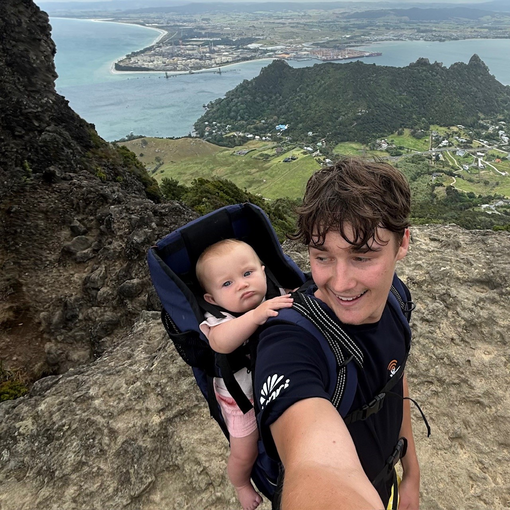

I am a researcher and engineer with a passion for solving complex problems at the intersection of machine learning, simulation, and operations research. My work focuses on developing practical solutions that bridge theoretical advances with real-world applications.
Currently, I am exploring new methods in computer vision and deep learning, with particular interest in interpretability, uncertainty quantification, and meteorological applications. I believe that robust AI systems must not only perform well but also be transparent and reliable in high-stakes environments.
When I'm not working as an engineer, I enjoy spending my time between surfing, tramping and raising my daughter.